🎯 Pourquoi ce chapitre ?
D'après le programme officiel tunisien (Thème 2, Objectif 5 — p.18), ce chapitre vise à :
📚 Préacquis
- Ch.1 — L'écosystème = Biotope + Biocénose en interaction constante.
- Ch.3 — La végétation tunisienne suit un gradient pluvio-thermique Nord→Sud.
- Ch.4 — Les chaînes et réseaux trophiques sont en équilibre. Toute perturbation a des conséquences en cascade.
- Les décomposeurs minéralisent la matière organique → cycle de la matière.
- La photosynthèse des végétaux absorbe le CO₂ et régule l'atmosphère.
- En Tunisie, les forêts ont chuté de 3 000 000 ha (époque romaine) à 386 000 ha en 1997.
❓ 2 Questions directrices
- Quelles sont les activités humaines entraînant un déséquilibre des écosystèmes ?
- Comment l'Homme peut-il agir positivement pour préserver les écosystèmes ?
🧠 Comprendre avant de mémoriser
Ce chapitre est la synthèse de tout le Thème 2. Il articule deux axes symétriques : actions négatives de l'Homme (déforestation, désertification, salinisation, pollution) et actions positives (reboisement, fixation des dunes, protection faune/flore, épuration). La notion de développement durable est la réponse à la question : comment exploiter les ressources naturelles sans compromettre leur disponibilité pour les générations futures ?
Clique sur chaque notion · Pièges CAPES et connexions révélés
🪓 Les 4 actions négatives de l'Homme
| Action négative | Cause principale | Conséquences |
|---|---|---|
| Déforestation | Agriculture, urbanisation, coupes de bois | Érosion des sols · Disparition biotope · Perte biodiversité |
| Désertification | Surpâturage + changements climatiques | Désert gagne 16 km²/an dans zones arides · Oasis englouties |
| Salinisation des sols | Irrigation avec eaux saumâtres sans drainage | Sécheresse physiologique des plantes · Désertification |
| Pollution | Industrie, transport, agriculture intensive | Dégradation air, eau, sols · Impact santé humaine |
🌱 Les 4 actions positives de l'Homme
| Action positive | Méthode | Bénéfices |
|---|---|---|
| Reboisement | 264 000 ha (1993–2003) · Parcs urbains | Régénération flore/faune · Lutte érosion · Absorption CO₂ |
| Fixation des dunes | Barrières + plantation d'Oyat | Lutte contre désertification · Réduction érosion éolienne |
| Protection faune/flore | Réglementation chasse/pêche · Réserves · Réintroduction | Préservation biodiversité · Équilibre écologique |
| Assainissement eaux usées | Stations d'épuration | Élimine 80% matière organique · Eau réutilisable |
♻️ La notion de Développement Durable
"Il n'existe pas de plus grande contribution... que l'éducation et la formation en matière d'environnement."
— UNESCO, 1988
| Pilier | Objectif |
|---|---|
| 🌿 Environnemental | Préserver les ressources naturelles et les écosystèmes |
| 💰 Économique | Assurer un développement économique durable |
| 👥 Social | Garantir l'équité sociale et la qualité de vie |
⚠️ 3 Pièges classiques CAPES
🔗 Connexions avec le manuel
La déforestation détruit le biotope → la biocénose disparaît.
La déforestation menace les étages bioclimatiques.
Bioaccumulation des pesticides illustre les chaînes alimentaires.
Pollution des nappes = problème central de T1Ch4.
💭 Questions de réflexion
1. La Déforestation
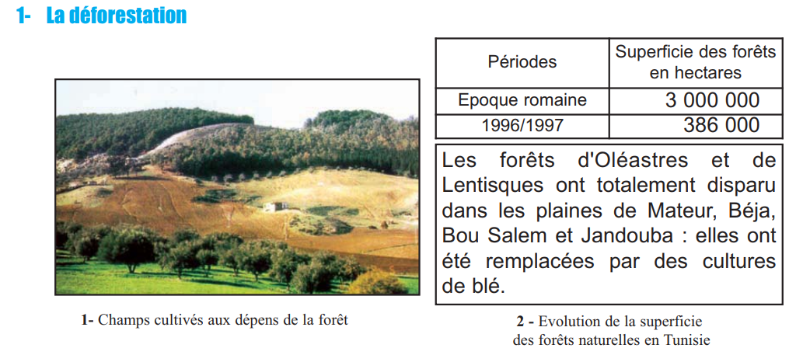
| Période | Superficie forêts (ha) |
|---|---|
| Époque romaine | 3 000 000 |
| 1996/1997 | 386 000 |
| Perte | − 2 614 000 ha (−87%) |
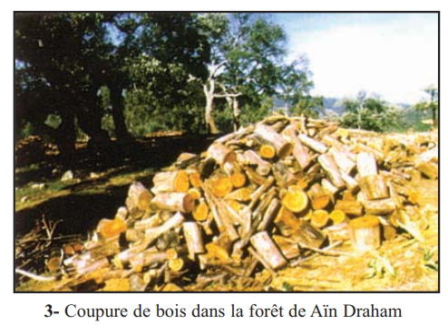
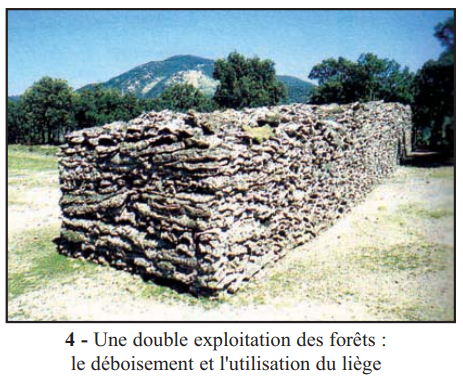
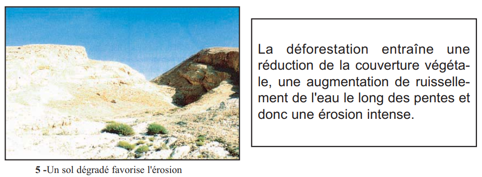
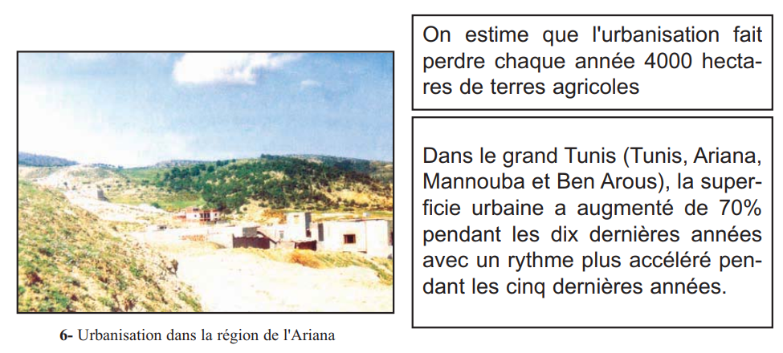
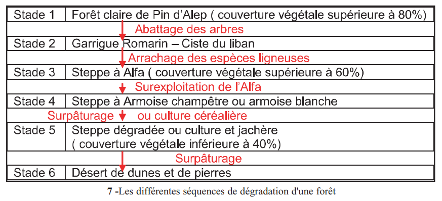
Causes : Agriculture · Coupe de bois · Urbanisation (4000 ha/an perdus). Conséquences : Réduction couvert végétal → ruissellement accru → érosion intense → disparition biotopes → perte faune.
1. La superficie des forêts tunisiennes est passée de 3 000 000 ha (époque romaine) à .
2. La déforestation entraîne une intensification de l'.
2. La Désertification et la Salinisation
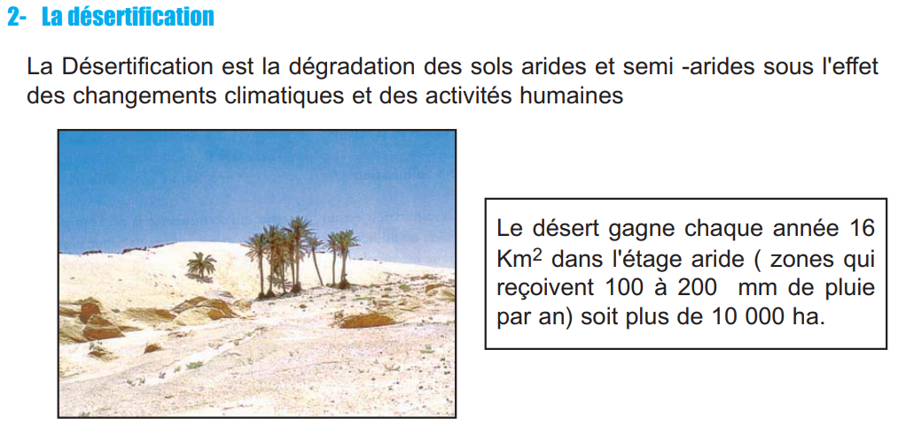
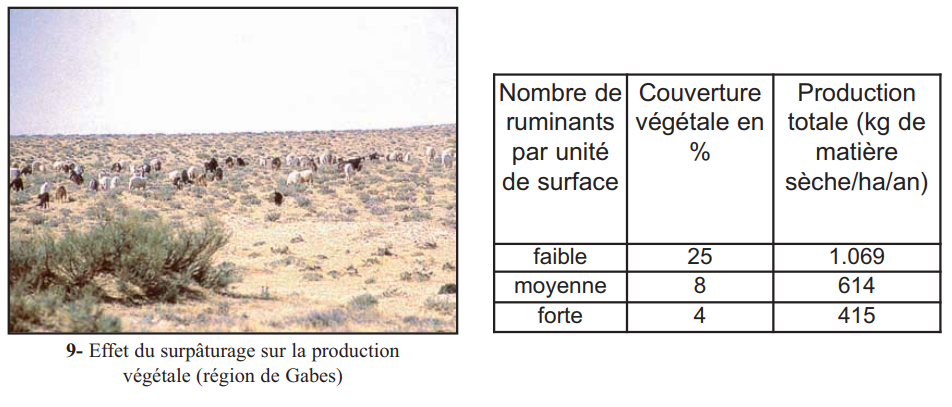
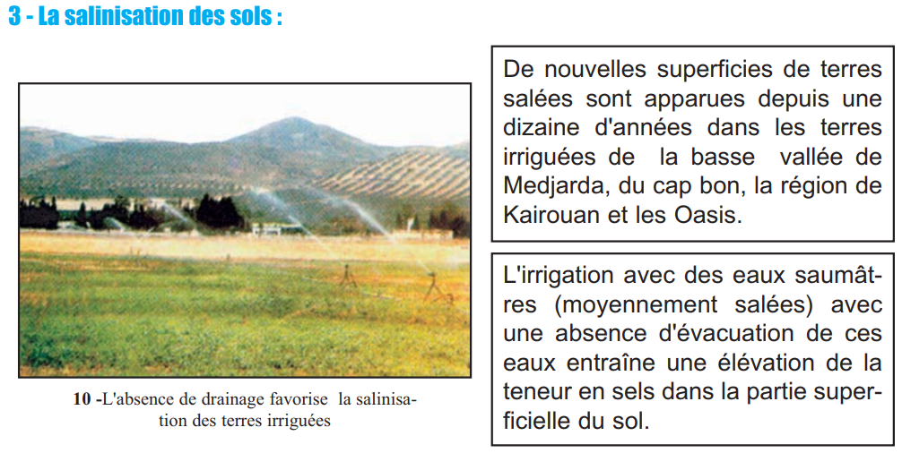
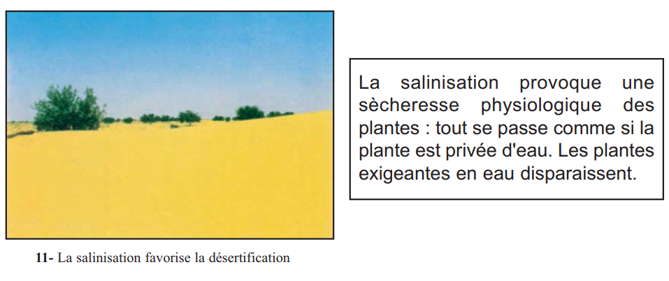
Désertification
| Nbre ruminants/surface | Couverture végétale | Production (kg/ha/an) |
|---|---|---|
| Faible | 25% | 1069 |
| Moyenne | 8% | 614 |
| Forte | 4% | 415 |
→ Surpâturage fort : couverture végétale ÷ 6, production −61% !
Salinisation
| Cause | Mécanisme | Conséquence |
|---|---|---|
| Irrigation eaux saumâtres sans drainage | Évaporation → accumulation sels en surface | Sécheresse physiologique des plantes |
1. Le surpâturage intense réduit la couverture végétale à .
2. La salinisation provoque une sécheresse .
3. La Pollution
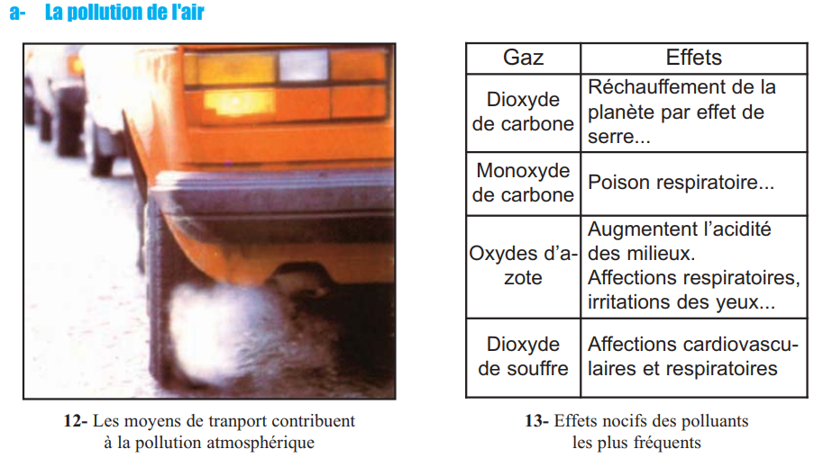
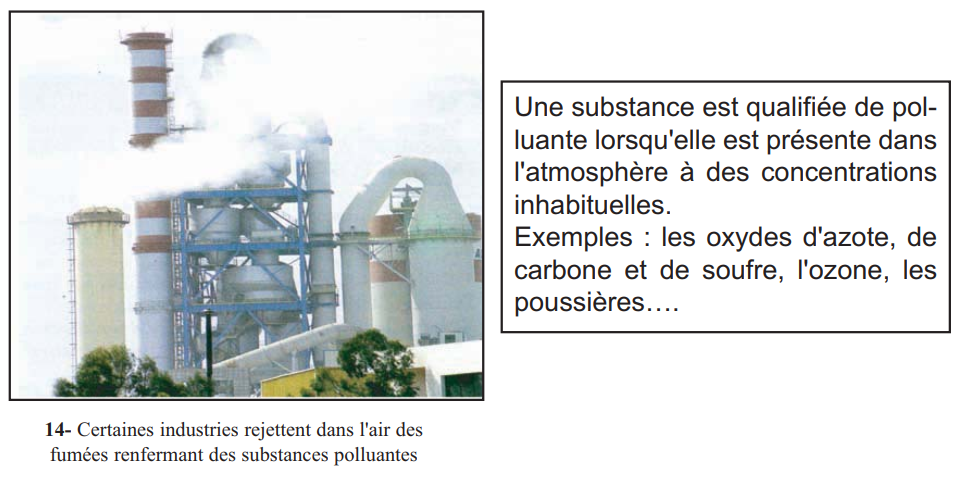
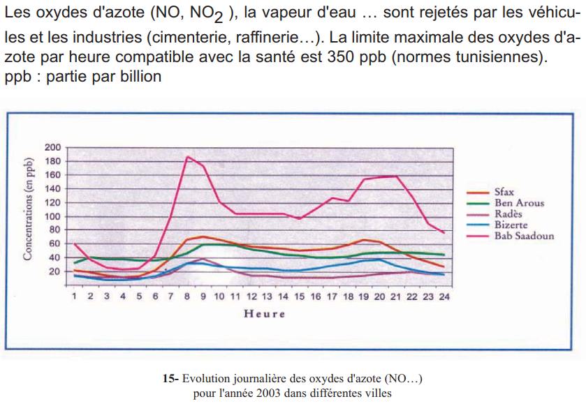
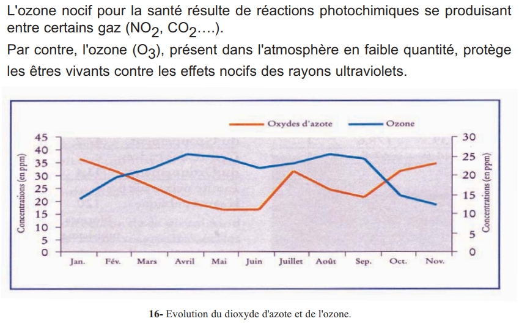
a. Pollution de l'air
| Polluant | Origine | Effets écosystème | Effets santé |
|---|---|---|---|
| CO₂, CO | Combustions | Effet de serre | Asphyxie (CO) |
| NO, NO₂ | Véhicules, industries | Dépérissement forêts | Troubles respiratoires |
| SO₂ | Industries | Pluies acides | Troubles cardiovasculaires |
| Métaux lourds | Industries, déchets | Bioaccumulation | Empoisonnements |
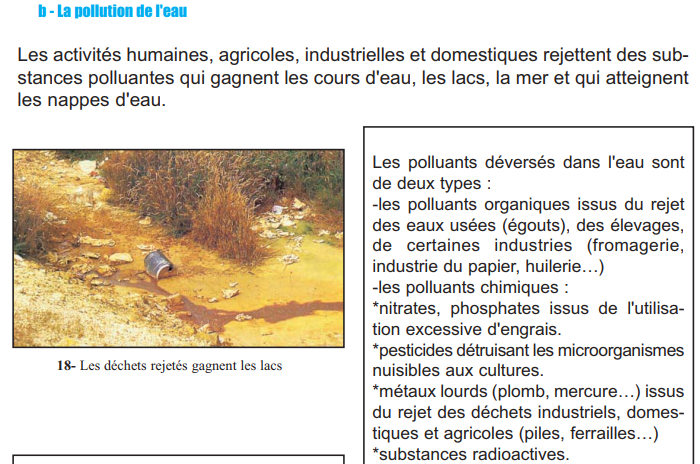
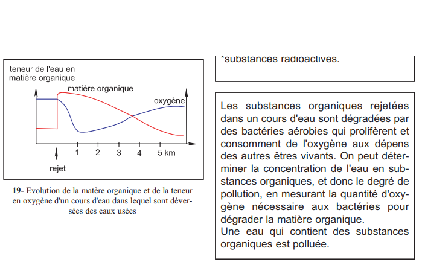
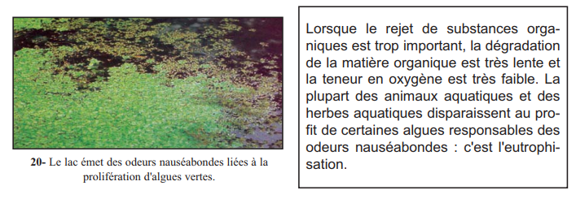
b. Pollution de l'eau
| Type | Origine | Conséquences |
|---|---|---|
| Polluants organiques | Eaux usées, élevages | Eutrophisation : bactéries → baisse O₂ → mort faune → algues |
| Nitrates, phosphates | Engrais excessifs | Asphyxie nourrisson · Eutrophisation |
| Pesticides | Agriculture intensive | Bioaccumulation ×1500 |
| Métaux lourds | Déchets industriels | Intoxications · Bioaccumulation |
1. L'eutrophisation est causée par .
2. Les pesticides non dégradables se .
3. Le CO₂ des combustions contribue à .
Les 4 stratégies de préservation des écosystèmes
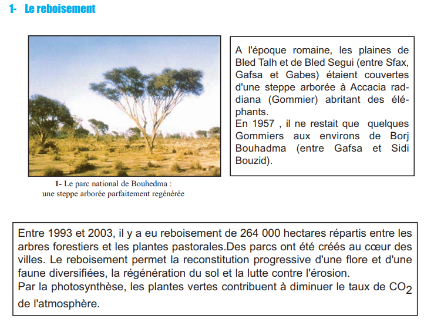
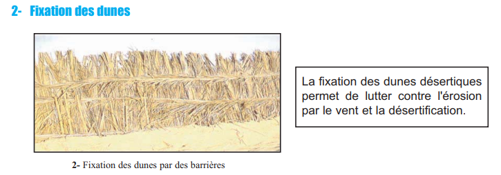
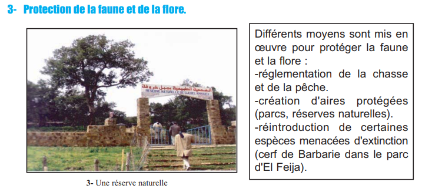
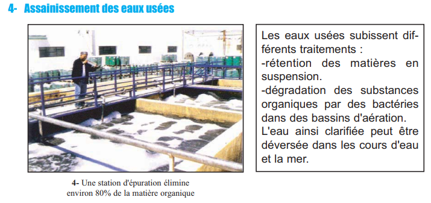
| Action | Méthodes / Données Tunisie | Effets |
|---|---|---|
| Reboisement | 264 000 ha (1993–2003) · Parcs urbains · Bouhedma | Régénération flore/faune · Lutte érosion · Absorption CO₂ |
| Fixation des dunes | Barrières + plantation Oyat | Lutte désertification · Réduction érosion éolienne |
| Protection faune/flore | Réglementation chasse/pêche · Réserves · Réintroduction Cerf | Préservation biodiversité · Équilibre trophique |
| Assainissement eaux usées | Stations épuration : rétention + aération | Élimine 80% MO · Réduit eutrophisation · Eau réutilisable |
1. Entre 1993 et 2003, la Tunisie a reboisé .
2. La fixation des dunes utilise principalement .
3. Une station d'épuration élimine environ .
📌 Retenons — Développement durable
1La déforestation → intensification de l' et disparition des . L'urbanisation fait perdre .
2Le surpâturage et le déboisement accélèrent la . L'irrigation avec des eaux entraîne la , provoquant une sécheresse .
3La pollution atmosphérique est due aux activités . Les déchets organiques dans l'eau → . Les pesticides se concentrent dans les .
4Le reboisement régénère la flore/faune et diminue l'. Les forêts absorbent le . La fixation des dunes ralentit la .
5Le développement durable = utilisation sans . L' atténue la pollution.
🃏 Flashcards
✏️ QCM — Format CAPES (1 à 3 bonnes réponses)
Questions du manuel (p.168) et complémentaires
📝 Exercices interactifs
Q1. Le déboisement favorise :
Q2. La pollution des sols peut être due à :
Q3. Mot caché — Espace naturel protégé pour la faune et la flore :
🌍 Ex.1 — Associer chaque action humaine à ses conséquences
| Action humaine | Conséquence principale |
|---|---|
| Coupe intensive des forêts | |
| Surpâturage dans les zones arides | |
| Irrigation avec eaux saumâtres sans drainage | |
| Rejet massif d'eaux usées organiques dans un lac | |
| Utilisation excessive de pesticides agricoles |
♻️ Ex.2 — Compléter le texte sur le développement durable
La déforestation accélère l'. Le surpâturage accélère la . Les rejets organiques → . Pesticides → . Le absorbe le . L' élimine 80% MO. Ensemble = .
🔢 Ex.3 — Séquences de dégradation d'une forêt (doc.7, p.158)
Ordonner du stade initial (1) au stade final (5) :